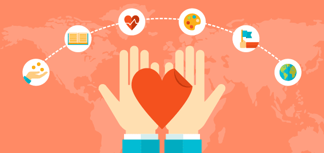
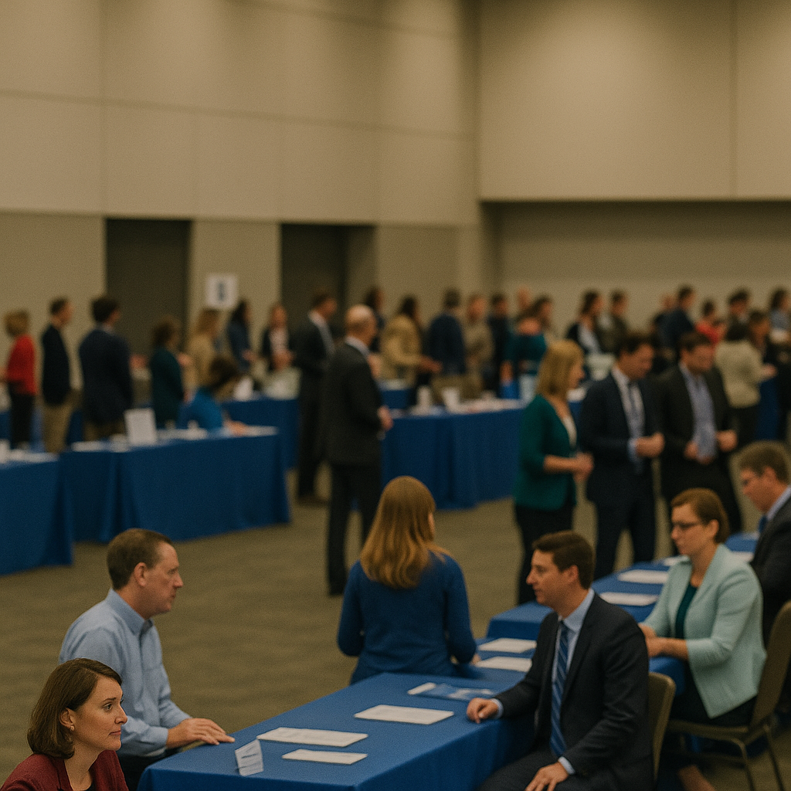
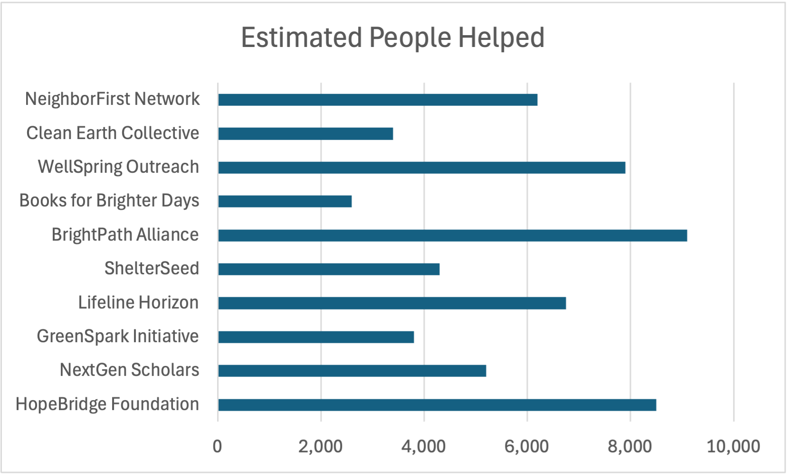
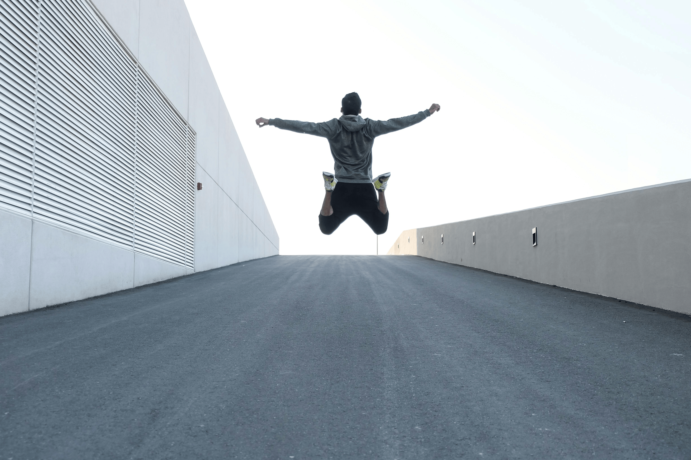

Charity & causes events in United States
An Eventbrite link to find other charity expositions in the United States.

This event is designed to showcase a the organizations that are making an impact in the lives of many people.
Each organization will have its own booth where attendees can learn about the organizations mission, hear real stories of their visions for the future, and even donate directly to the organizations and support them.
This event is open to anyone who is interested in giving to those in need, learning more about nonprofit organizations, or discovering new ways to support their community and people around the world.
The aim of this event is to connect individual that are interested in philanthropy with organizations that are philanthropic.

Doors open for all attendees.

Attendees can visit different tables with representives of organizations where they can learn about the people that the organizations help.
⭐ 3 people have RSVP'd to this event!
RSVP now to save your seat at the Changemakers Expo! Sign up to attend, connect with nonprofits, and be part of the impact.
🎟️ Joe from United States has RSVP'd.
🎟️ Kole from United States has RSVP'd.
🎟️ Alexander from Canada has RSVP'd.
Thanks for RSVPing!

An Eventbrite link to find other charity expositions in the United States.
An Eventbrite link to find other charity expositions in Canada.